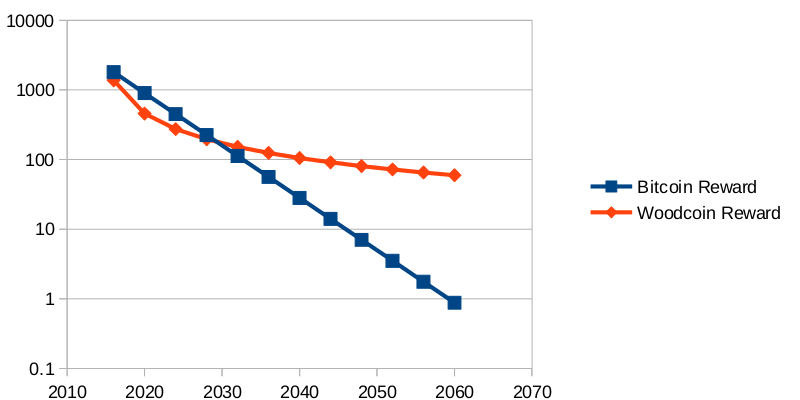

Stuff That Makes Us Cooler
Technical Details
Woodcoin is a public cryptocurrency like Bitcoin. There are three major changes, with design considerations listed here:
- Proof of Work algorithm: Double Skein
This is the first consensus network built solely with the skein hash function. Read more about Skein here. We hope to encourage further use and testing of the Skein family with this coin.
- Elliptic Curve for Digital Signatures: X9_62_prime256v1.
To sign transactions and create public and private addresses we use the elliptic curve digital signature algorithm ECDSA just like bitcoin. However we use a different curve as a basis to do so. This curve is perhaps the most used in the financial industry. Some people think it is better. We like to encourage cryptographic diversity.
- Logarithmic Coin Release
Woodcoin is the first coin to use a logarithmic coin release. The woodcutting reward is continually adjusted according to the harmonic series. From /src/main.cpp:
int64 static GetBlockValue(int nHeight, int64 nFees) {
int64 nSubsidy = 1000000 * COIN;
if (nHeight<100) return 1*COIN;
else return nSubsidy/nHeight + nFees;
}
This leads to a total money supply S which increases logarithmically in block height n:
S = 1000000* ( log n + gamma ) – forest
log = natural logarithm
gamma = euler-mascheroni constant
forest = 5187377.51763962
Unlike Bitcoin and most other cryptocurrencies, the reward will never drop to zero and will smoothly decrease. (Techinically it is scheduled to reach zero when the reward drops to under 1 satoshi but that isn’t for about 350 million years) Here is a plot of the woodcutting reward per day, compared to bitcoin, for the next 50 years or so:

Other technical details of Woodcoin:
- Port: 8338
- Testnet: 18338
- RPC: 9338
- RPC Testnet: 19338
- Speed: 2 min. blocks
- Difficulty: 1 hr. adjust
Heritage:
Notable continued coin heritage: Bitcoin, Litecoin, Quarkcoin.
Depricated heritage (release version): Cthulu’s Offerings, Foocoin/SmallChange.

 Pools
Pools  Exchanges
Exchanges  Public Ledger
Public Ledger  Free Coin
Free Coin  Earn Coin
Earn Coin  Khaz
Khaz  Downloads
Downloads  Code
Code  Media
Media